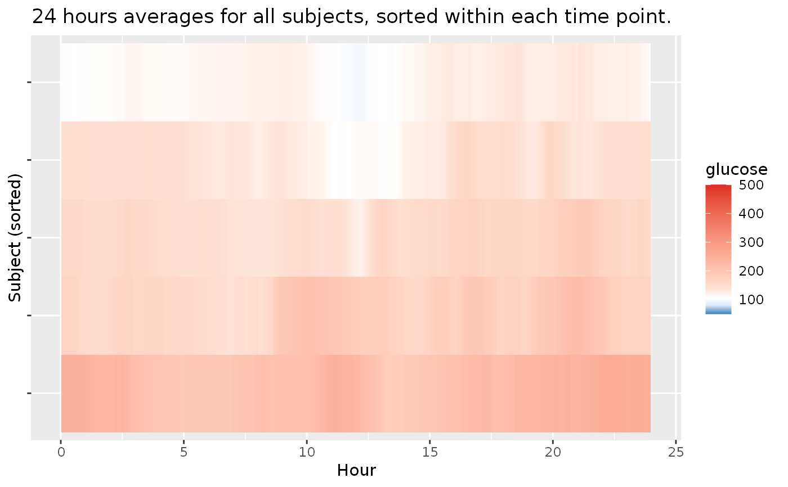
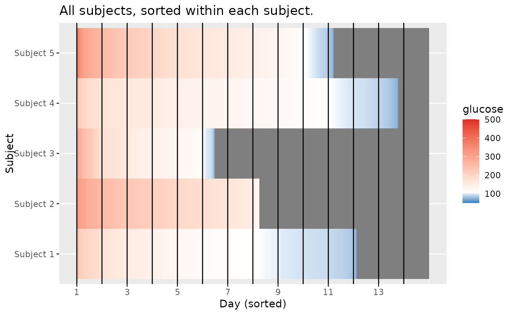
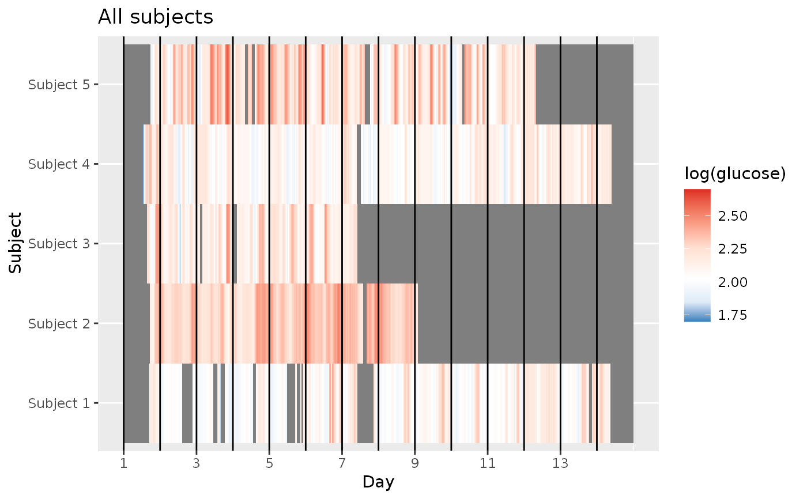

plot_lasagna.RdLasagna plot of glucose values for multiple subjects
plot_lasagna( data, datatype = c("all", "average"), lasagnatype = c("unsorted", "timesorted", "subjectsorted"), maxd = 14, limits = c(50, 500), midpoint = 105, LLTR = 80, ULTR = 140, dt0 = NULL, inter_gap = 60, tz = "" )
| data | DataFrame object with column names "id", "time", and "gl". |
|---|---|
| datatype | String corresponding to data aggregation used for plotting, currently supported options are 'all' which plots all glucose measurements within the first |
| lasagnatype | String corresponding to plot type when using |
| maxd | For datatype "all", maximal number of days to be plotted from the study. The default value is 14 days (2 weeks). |
| limits | The minimal and maximal glucose values for coloring grid which is gradient from blue (minimal) to red (maximal), see |
| midpoint | The glucose value serving as midpoint (white) of the diverging gradient scale (see |
| LLTR | Lower Limit of Target Range, default value is 80 mg/dL. |
| ULTR | Upper Limit of Target Range, default value is 140 mg/dL. |
| dt0 | The time frequency for interpolated aligned grid in minutes, the default will match the CGM meter's frequency (e.g. 5 min for Dexcom). |
| inter_gap | The maximum allowable gap (in minutes) for interpolation of NA glucose values. The values will not be interpolated between the glucose measurements that are more than inter_gap minutes apart. The default value is 60 min. |
| tz | A character string specifying the time zone to be used. System-specific (see |
A ggplot object corresponding to lasagna plot
Swihart et al. (2010) Lasagna Plots: A Saucy Alternative to Spaghetti Plots, Epidemiology 21(5), 621-625, doi: 10.1097/EDE.0b013e3181e5b06a
plot_lasagna(example_data_5_subject, maxd = 18, tz = "EST")plot_lasagna(example_data_5_subject, datatype = "average", lasagnatype = 'timesorted', tz = "EST")plot_lasagna(example_data_5_subject, lasagnatype = "subjectsorted", LLTR = 100, tz = "EST")